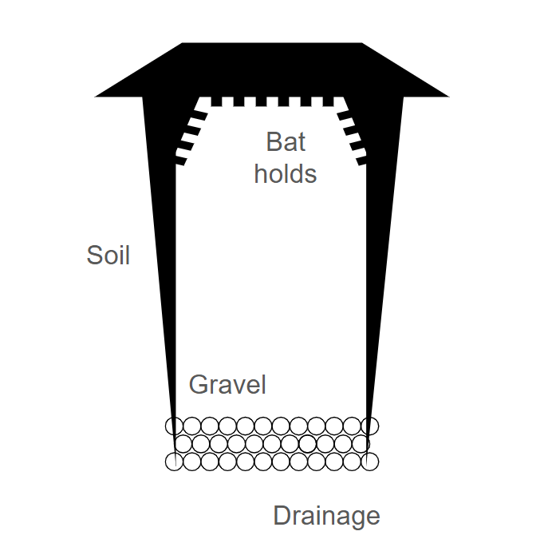

April 2025
For good writing to adapt to the modern world of LLMs we need a framework of interaction with these systems. I propose two here; a writer-first system where the LLM fills in roles that might otherwise have been taken by other people but can now be automated, and a Partner system where the LLM takes a more active role from start to finish.
The basic idea here is to use an LLM in order to be an assistant but not the main driving force behind the work.
To work more closely with an AI LLM to work back and forth in developing an idea is another story altogether, see Collaborative Partner for more.
Use this prompt to have the LLM act as a scribe on the text-to-speech stream of consciousness output:
Prompt: "Here's a stream of consciousness write up that I did using speech to text. I want you to clean it up and rewrite it in a nice easy to understand way while preserving the tone and all of the ideas expressed. Make good sense of this in a way that is much better to read. Do not add new ideas. The POV should be coming from me as the author of this for my blog. It should be readable and easy to digest for an educated audience. Reorganize these thoughts and ideas as needed to make the most sense."
Use this prompt to have the LLM act as an editor on the cleaned up output from the previous step (after personally revising it)
ChatGPT's: "Act as a professional editor. I'm the author of this piece and I've already done a first-pass cleanup. Now I want you to give me clear, thoughtful editorial feedback to make it sharper and more effective without changing my voice or intent. Focus on structure, clarity, flow, tone, and strength of argument. Identify what's working, what could be better, and give specific suggestions for improvement, not just vague praise or rewrites. Assume I'm a competent writer looking to push this to the next level."
Claude: "Please review this piece of writing as an experienced editor would. I want constructive feedback that will help me improve it, not a complete rewrite. Specifically:
Please provide this feedback in a clear, organized format that I can use as a revision guide. Be specific about what works well in addition to what needs improvement."
Meta's: Review the attached text as an editor would, focusing on structure, coherence, and overall flow. Provide feedback on areas that need improvement, suggest alternative phrasings or sentence structures where necessary, and highlight any inconsistencies or gaps in logic. Assume the text is intended for [insert target audience here, e.g., general readers, academic audience, etc.].
After it has given you direction as to where to go next you can then use its editing capabilities to prompt what changes might be needed:
"Give me the piece back with blank spaces or bracketed notes where I should fill in. Like an editor might. Even down to new sections or transitions where I might keep the writing going."
Here is a prompt you can use to integrate new ideas into existing work.
"I have an existing draft and some new ideas I've recorded using speech-to-text. I want you to help me integrate these new thoughts into my current draft in a natural way that maintains flow and coherence.
Here's my current draft: [PASTE CURRENT DRAFT HERE]
Here are my new ideas (stream-of-consciousness): [PASTE NEW SPEECH-TO-TEXT IDEAS HERE]
Please:
Don't completely restructure my work—just help me weave in these new thoughts in a way that enhances the overall piece."
This can then all be converted into html for posting on a website or blog. This is either a simple step or the most complex and so usage of AI tools varies.
"Convert this to HTML, make no changes to the content, simply convert it in a way that preserves the organization and layout for readability. Assume there is already an existing ccs style:
[paste text here]"
But often this can include many other elements and can't just be boiled down to one use case.
When working with an AI LLM to develop ideas collaboratively, the process becomes more conversational and iterative
The key difference in this approach is that the LLM serves as an active collaborator rather than just processing your existing thoughts. This can be particularly valuable when working through complex problems or when you need to consider multiple angles quickly.
These systems can link sequentially, within the same chat window you can utilize one after the other on the same topic and have it built within a single context window.
Of course this is a half-way measure between the above system "You are still the Author" and a fully independent AI researcher. Many of such AIs are being built now across many companies, it would seem that it will be the case before long that none of this manual ideation will be necessary in the face of the independent "deep research" system that can automate the whole process. Be wary of these systems as they could sap you of critical thinking.
Begin by articulating your initial concept to the LLM, even if half-formed. Ask specific questions about potential directions, implications, or gaps in your thinking.
I'm developing an idea about [brief description of your concept]. Here's my current thinking: [explain your initial thoughts]. As my thought partner, please:
Please focus on helping me refine this concept while keeping its original essence intact.
Use the LLM to explore multiple perspectives on your idea. Ask it to analyze strengths and weaknesses or to consider how different audiences might respond.
I'd like you to serve as a sounding board for this idea: [describe your idea in detail]. Please analyze this concept from multiple perspectives by:
Your goal is to help me understand how this idea might be received and how to make it more robust.
Have the LLM suggest relevant concepts, frameworks, or examples that could enrich your thinking. This can help you discover connections you might have missed.
I'm developing this concept: [explain your idea]. I need your help as a research assistant to enrich my understanding. Please suggest:
Focus on providing substantive information that would help me develop a more well-rounded understanding of this topic.
Use techniques like "steelmanning" (having the LLM present the strongest version of an idea) or counterfactual thinking to push your concept further.
I want to deeply explore this concept: [describe your idea]. Please help me through structured intellectual exercises:
Your aim is to push my thinking beyond obvious solutions and help me consider this from angles I might have missed.
Engage in back-and-forth exchanges where you build on the LLM's suggestions and it responds to your evolving thoughts. This creates a more dynamic ideation process than the linear scribe-editor workflow.
We're going to refine this idea through dialogue: [describe current version of your idea]. As we discuss, please:
Let's develop this idea through genuine back-and-forth, where each response builds on what came before.
December 2024
Throughout history, technology has shaped who holds power. The printing press shattered the church’s monopoly on knowledge. The internet broke down barriers to information and communication. Now, AI stands at a crossroads: will it follow in the footsteps of democratizing technologies, or will it become one of the most centralizing forces we’ve ever seen?
Technologies tend to either centralize or democratize power in society, driven by underlying economic and technological factors. This dynamic isn’t new—technology has always reshaped society, requiring power shifts.
Some technologies inherently lead to centralization due to their fundamental characteristics. Nuclear power is a prime example: its massive economies of scale and rigorous safety requirements make only large reactors viable. This necessitates concentrated funding sources and government oversight, reinforcing centralization despite nuclear power’s benefits.
Conversely, other technologies democratize power and opportunity. The combination of personal computing, the internet, and open-source software exemplifies this shift. Personal computers put computational power into the hands of individuals, breaking reliance on centralized mainframes. The internet further decentralized information sharing, enabling global communication and commerce without gatekeepers. Open-source software then accelerated this trend by making powerful tools freely available, reducing dependence on corporate-controlled ecosystems. Together, these technologies have empowered individuals, startups, and decentralized communities in ways previously unimaginable.
The car-versus-train comparison further illustrates this dichotomy. Automobiles democratized transportation by placing mobility directly in individuals’ hands. Trains, despite their efficiency, are inherently centralizing due to their massive infrastructure requirements, typically demanding government involvement. Both technologies provide clear benefits but differ in who controls the levers of power—either a distributed network of individuals or centralized authorities, whether governmental or corporate.
This brings us to one of today’s most pressing questions: what will be the impact of AI? Like any transformative technology, its effects could go either way. One scenario is highly centralized: frontier AI models requiring enormous data centers and investment, controlled by a few powerful entities, potentially displacing many workers while concentrating benefits within these hubs. The alternative is more democratic: if AI capabilities plateau at a level allowing local deployment or small-cluster operation, the benefits could be widely distributed. Open-source AI efforts could also counterbalance corporate control, ensuring more people have access to advanced AI tools.
However, even in a decentralized scenario, AI presents risks. Open-source AI can empower individuals, but it can also be weaponized by bad actors. AI-generated misinformation, deepfakes, and automated cyber threats could create new forms of power asymmetry, even if the technology itself is widely available. Regulation and ethical safeguards will play a crucial role in shaping whether AI becomes a truly democratizing force or merely shifts power in different ways.
The key question is who captures the excess capital and value generated by these technologies—whether it’s distributed among many participants or concentrated in the hands of a few central players. AI’s trajectory isn’t inevitable; it depends on the choices we make now. Will we shape its development to ensure broad access and empowerment, or will we allow it to consolidate control in the hands of a few? The future is still being written.
November 2024
Government policies can often be thought of as control systems, but many of them function as open-loop systems—static rules that don’t adjust based on outcomes. A clear example of this played out in India, where some states implemented policies to encourage smaller families while others did not. Over time, population shifts altered political representation, leading to unintended consequences. A more effective approach would involve designing policies with active feedback, dynamically adjusting in response to real-world conditions.
Taxes provide a useful example. Instead of a fixed fee, a step up in sophistication would be to structure taxes as a percentage of income, tying them to inflation or median earnings in an area. Taking it further, taxes could be linked to overall wealth or national debt levels, creating a system that adapts to economic conditions rather than remaining rigid. Similarly, congestion pricing in New York City currently functions as a flat fee, but a more effective system would make the cost proportional to real-time congestion levels, smoothing traffic flow rather than imposing a blanket charge.
Of course, dynamic policies come with potential pitfalls. A major one is opacity—if people can’t easily understand how the system works, it introduces confusion and delays in decision-making. But when implemented well, dynamic pricing mechanisms have been effective in balancing supply and demand across industries, and there’s no reason government interventions couldn’t function in a similar way.
Education policy offers another compelling case. A promising liberal idea is to provide more funding to underperforming schools rather than less, ensuring that all students receive a strong baseline education. But execution is key—if funding is simply tied to poor performance without safeguards, it could create perverse incentives for schools to underperform on purpose. A well-designed system would distribute resources dynamically while preventing exploitation.
Housing and zoning policies could benefit from the same approach. When housing prices spike in a city, regulatory barriers to building higher-density developments should be lowered, making it easier to meet demand. A land value tax could naturally enforce this principle by tying taxation to market value, ensuring land is used more efficiently without requiring constant intervention.
This broader idea differs from policies like minimum wage being indexed to inflation. The goal is not just to adjust a number in response to past data but to create an active control loop—something akin to a PID controller—where policies continuously respond to changing conditions in real time. The next logical step would be to model this in a simulated environment. For example, a population growth model could help determine what a stable demographic pyramid looks like and how policies might adapt to medical advances, immigration trends, or economic shocks.
Building such a simulation in Python, perhaps using Google Colab, could reveal fascinating insights about long-term policy stability. By treating governance as an adaptive system rather than a rigid set of rules, we could design smarter policies that evolve with society rather than lag behind it.
October 2024
I want to build a character generator that produces random characters, but with the correct weighted averages for a given population and time period. The idea is that randomness should still reflect real-world demographics. If I set it to Switzerland 200 years ago and ask for three random characters of a certain socioeconomic status, it should generate three Swiss people with a roughly even gender split. Simple enough.
But things get more complicated in the modern world. If I ask for ten random Americans, I’d want the generator to reflect the actual demographics of the U.S. in a way that’s statistically sound. Maybe six of them are white, with a 50/50 gender split, two are Black, and so on. Physical characteristics should also be randomized within realistic parameters—hair color, eye color, height, body type—without falling into stereotypes or biases.
A lot of this comes from the sense that representation in media often feels off in both directions. Hollywood sometimes overrepresents minorities in ways that feel forced, while also engaging in whitewashing, especially in settings like the Midwest where nonwhite characters are often ignored despite existing in real life. The goal here isn’t to push an agenda, just to create an accurate, useful tool that authors, screenwriters, or game designers can use to generate realistic character populations.
Ideally, this could even be integrated into storytelling. Think of something like a Mad Libs system where the core plot beats are laid out first, and character details are inserted afterward. Obviously, you can’t entirely separate identity from story—people’s backgrounds influence their experiences—but for certain types of storytelling, this approach could add flexibility and depth. A big inspiration for this is D&D campaigns, where NPCs are often randomly generated but still need to fit within the world’s logic.
Beyond race and gender, the generator should also account for factors like sexual orientation. If you’re creating a random group of characters, how many of them are likely to be gay? Bisexual? The tool should make sure these elements are represented naturally and proportionally, rather than leaning on outdated assumptions or arbitrary numbers.
The end goal is an online tool that lets users generate characters who feel real, with all the diversity and statistical probability of real human populations, while still embracing the unpredictability that makes randomness interesting.
Summer 2024
WIP
Janurary 2025
As a thought experiment inspired by Neal Stephenson's "Seveneves," I've been considering how humanity's survival chances might vary based on the warning time we receive before a planetary-scale threat. This analysis examines not just survival probabilities for different timeframes, but also how these odds might shift given our current technological capabilities and societal preparedness.
With only seconds of warning, survival chances are effectively zero. Even with minutes of notice, only a handful of VIPs near designated bunkers might survive initially, but long-term survival remains virtually impossible. The brutal reality is that such short notice essentially guarantees extinction.
At the day-scale, survival probability increases to roughly 1%. More launch vehicles could be prepared, and submarines could be retrofitted as survival vessels. However, social chaos becomes a significant factor – panic and desperate attempts to access limited bunker space could actually reduce survival chances for organized efforts.
The monthly timeframe maintains similar survival odds but opens up more sophisticated options. We could potentially convert rocket upper stages into Skylab-style habitats and better outfit existing tunnels and caves. While expanding underground infrastructure would remain challenging, multiple competing survival designs become feasible.
With years of warning, survival probability jumps to around 10%. This timeframe allows for new spacecraft development, bunker construction, and even lunar or Martian missions. One particularly interesting concept would be using Tunnel Boring Machines (TBMs) in a spiral pattern to create underground cities, maximizing the efficiency of continuous excavation.
Longer timeframes present their own challenges. While decades of preparation could theoretically enable near-complete survival, maintaining focus and urgency becomes increasingly difficult. Political conflicts and generational differences can hinder progress, reminiscent of scenarios portrayed in "The Three-Body Problem." With centuries of warning, we might achieve 100% survival – or paradoxically, fail entirely due to human shortsightedness.
Looking at this challenge through a "tech tree" lens (similar to civilization-building games) reveals interesting strategic priorities. A coordinating body might approach it as follows:
Short-term: Leverage existing systems like Falcon rockets and Starlink for immediate space-based contingencies.
Medium-term: Scale up TBM manufacturing to enable rapid underground development while maximizing rocket reusability for orbital infrastructure.
Long-term: Develop humanoid robots for dangerous space operations and establish robust supply chains to orbital habitats.
Perhaps the most sobering thought is that we might already be somewhere on this timeline without knowing it. The challenge of maintaining morale and social cohesion during such a long-term existential threat response mirrors some current debates about humanity's future – including the controversial approaches of figures like Elon Musk.
Janurary 2025
WIP
Janurary 2025
WIP
Janurary 2025
WIP
Janurary 2025
WIP
Janurary 2025
WIP
Janurary 2025
Stock prices aren't solely driven by company fundamentals and growth potential. There's an interesting demographic dynamic at play that I've been thinking about. When people are in their working years, they regularly invest portions of their income into stocks as part of their retirement planning. This creates a consistent buying pressure that pushes stock prices above what might be justified by pure financial analysis.
This isn't a controversial observation – we all know that many stocks serve as investment vehicles regardless of their underlying strength. Even companies with solid fundamentals might be trading at a premium simply because they're popular retirement account holdings. This suggests that most publicly traded stocks are likely somewhat overvalued relative to their strict financial merits.
The flip side of this phenomenon occurs when people reach retirement age. Even if a stock is performing well and represents a sound investment, retirees may need to sell to fund their living expenses. This selling pressure can artificially depress stock prices below their fundamental value.
This got me thinking: Could we use demographic data, specifically population pyramids showing the age distribution of a society, to predict whether stocks are likely to be over- or undervalued? Population pyramids are relatively stable and predictable, making them potentially useful for long-term market analysis. We occasionally see evidence of these demographic effects when stocks make significant moves in response to news that doesn't meaningfully impact their business fundamentals or industry conditions.